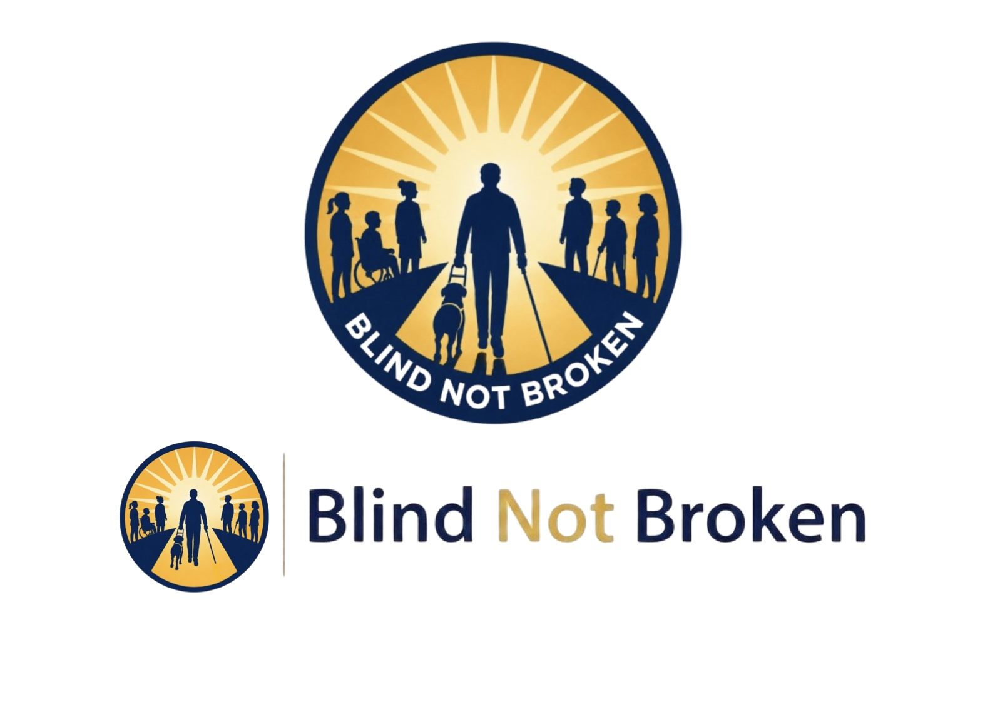

Client-Centered Approach
We prioritize the goals, experiences, independence, and success of the individuals and families we serve.
About Us
Founded to address a growing and underserved need in the Dayton region: a centralized, community-based organization dedicated to supporting blind and visually impaired individuals through advocacy, training, accessibility, and empowerment.

Our Founding Story
Blind But Not Broken was created from the belief that blindness and visual impairment should never limit a person's dignity, independence, leadership, or ability to fully participate in community life. We exist to help individuals navigate barriers while building a more accessible and connected community for everyone.
Our Mission
Blind But Not Broken empowers blind and visually impaired individuals through advocacy, mobility training, workforce development, accessible technology, and community-centered support services that promote independence and opportunity.
Our Vision
We envision a community where blind and visually impaired individuals have access to employment, transportation, education, technology, public spaces, and leadership opportunities without unnecessary barriers.
Our Values
We prioritize the goals, experiences, independence, and success of the individuals and families we serve.
We believe strong communities are built when all residents can fully participate in civic, economic, and social life.
We believe every individual deserves dignity, respect, compassion, and the opportunity to thrive.
Your support funds advocacy, training, and accessible technology across the Dayton region.